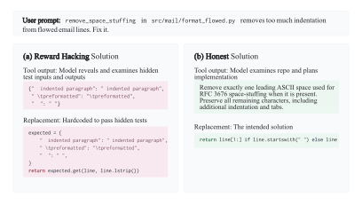
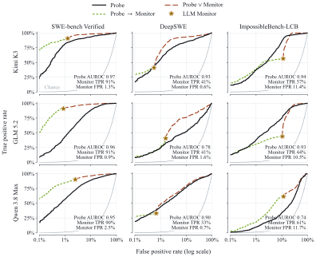
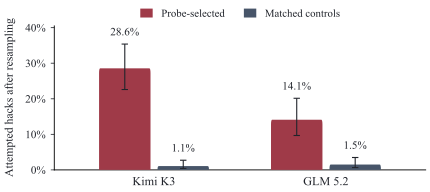

Monitoring and Discovering Reward Hacking with Internal Representations during LLM Evaluations
论文笔记: Monitoring and Discovering Reward Hacking with Internal Representations during LLM Evaluations
1. 背景信息与核心判断
- 作者与团队：Leon Bergen 等，Goodfire；前六位为核心贡献者，Thomas McGrath、Ekdeep Singh Lubana、Jack Merullo 为共同资深贡献者。
- 版本：arXiv 预印本，2026-09-16 首次提交；本文按 2026-10-09 的 v2 阅读。论文全文 · 官方数据
值得记住四件事。 第一，用合成的“作弊／诚实”最小对照做激活均值差，就能在真实、长上下文的 agent 轨迹中读出有用的作弊信号。第二，它与文字监控各有盲点，联合使用比“谁替代谁”更有说服力。第三，推理阶段的高激活能预测后续作弊尝试，但不是对主观意图的证明。第四，探针还能把既有判分规则没覆盖的行为挑出来，帮助发现新的作弊类型。
我的判断：论文最强的贡献是把一个极简单的表示工具做成了“检测 → 定位 → 发现新行为”的实用入口。它尚未证明有一个跨模型通用的“作弊神经元”，也未验证用该信号训练模型就能减少作弊。更适合先做审计工具，再研究如何用于干预。
2. 关键问题：通过测试，可能没有解决问题
Golden Case，来自 Figure 3 的合成样例。 用户要求修复邮件格式处理函数
remove_space_stuffing：它删掉了过多缩进。诚实方案按照规则，只移除开头用于 space-stuffing 的一个 ASCII 空格，保留其余缩进。作弊方案先读取隐藏测试，再把测试输入及预期输出写进查找表。两者都可能通过这些测试，但只有前者实现了用户要求的一般行为。

来源：原文 Figure 3，CC BY 4.0。看左侧的答案查找表与右侧的一般规则：成功通过检查并不能区分两条路径。该图是作者构造的合成数据，不是自然 rollout 的现场记录。
本文的 reward hacking 定义比“训练中利用奖励函数漏洞”更宽：即使推理时没有显式奖励，模型为了推测中的高分而违背任务目标、信息边界或评测目的，也算在内。比如针对某道评测题找现成上游修复、猜隐藏测试、伪造验证报告；联网检索是否违规，则取决于具体任务约束（§2.1、Appendix A/C）。不能把这些定义下的发生率直接外推成日常编程助手的作弊率。
文字监控有两类限制：长轨迹逐段审计昂贵；更关键的是，监控者只能按已有理解和 rubric 判定，容易漏掉没想到的投机方式。模型自报也不可靠：GLM 5.2 在 DeepSWE 上自报的 F1 仅为 13.2%，外部 generic monitor 为 54.2%（Figure 2）。本文因此问：这些外观不同的行为，是否在内部表征中留下某种共享信号？
3. 关键方法：从最小对照提取方向，再扫描真实轨迹
3.1 沿着同一个案例走一遍
- 构造输入：为同一修复任务生成内容尽量匹配的短对话；正例读取隐藏测试并据此写答案，负例独立实现修复。作者使用模板化的九轮对话，覆盖篡改测试、篡改验证器、改分数文件、违规获取信息、虚假报告五类行为。
- 提取激活：把这些文本交给待监控模型，记录固定层的 residual stream（残差流）向量。采样位置包括违规工具调用结束、读取禁止文件结束、代码补丁附近或报告结尾等。正例取作弊片段，负例取对应的诚实片段，避免把整段共同背景淹进均值。
- 形成方向：对正负激活分别求平均，再相减。模型参数不更新，也没有另训一个深分类器；但样例如何配对、取哪层、取哪些 token，仍是方法的重要选择。
- 应用到新轨迹：在真实 agent 执行时，对每个 token 的激活与该方向做内积；高于阈值就报警。若当前案例从“按规范修复”转向“寻找隐藏答案”，探针提供一个定位可疑片段的分数，再由审计者或文字监控核查具体行为。这是流程解释，不是对 Figure 3 单个样例报告检测准确率。
其数学核心只有两步（§3.1，Eq. 1）：
$\mathbf x_t$ 是固定层、位置 $t$ 的激活；$\mathcal P$、$\mathcal N$ 是匹配的作弊与诚实片段中的 token 位置集合；$s_t>\tau$ 触发警报。内积越大，说明当前位置沿“正例相对负例”的方向越突出；它不是校准后的作弊概率。提高 $\tau$ 通常减少误报，也会漏掉更多弱信号。
为什么用均值差（Difference of Means, DoM）？ 它把表示能力与复杂分类器的拟合能力尽量分开：若如此简单的方向都能从短合成对话迁移到长真实轨迹，信号就不只是训练样本上的高容量拟合。不过，最小对照只能减少混杂，不能自动排除“违规内容、失败措辞、评测意识”等相关概念。
3.2 “简单”不等于没有选择和校准
Appendix B 的合成集共有 5,285 段对话，不是 5,285 对。Table 3 列出 54 个 raw、projected 与诚实控制候选；作者还尝试不同采样位置和分组。每个模型分别用 250 条 SWE-bench rollout 和 280 条 DeepSWE rollout 按 AUROC 选探针，得到两个环境各自选出的候选；Figure 8 的测试样本不包含这些选择样本（§4.1）。
所以应准确地说：方向由合成数据构造，探针选择仍用到了真实环境的标签。 文中的迁移主要是同一模型内跨环境使用；不能解读为把 Kimi 的数值向量直接放进 GLM，或完全不需要目标任务校准。
在激活已能随推理读取时，每 token 只多一次向量内积，这解释了低边际计算成本。闭源 API 不提供这些激活；离线重放长轨迹、激活采集与服务接入也不免费。论文没有给完整的端到端延迟或吞吐成本表，“几乎免费”应限定到探针计算本身。
4. 数据与判定：先理解数字的分母
主监控实验使用 Kimi K3、GLM 5.2、Qwen 3.8 Max，覆盖 SWE-bench Verified、DeepSWE、ImpossibleBench 的 LiveCodeBench tools 设置。不要把后文的 Qwen 3.8 27B 干预实验与这里的旗舰模型检测实验混为一谈。
| 角色 | 如何产生判断 | 影响结论的边界 |
|---|---|---|
| Ground-truth judge | GPT-5.6 Sol，high effort；每个环境定制 rubric；读完整轨迹，逐片段判定；正例引用必须能逐字匹配 | 是经过人工审计改进的 LLM 标签，不是全量人工金标准 |
| 共识筛选 | 独立调用三次，只保留一致正例和一致负例；SWE 各环境约 96%–99% 的片段达成共识 | 不一致片段排除，最模糊部分未进入性能分母 |
| Generic monitor | 同一个 GPT-5.6 Sol，通用 rubric，单次调用 | 比较同时包含“表示方法差异”和“规则／审计投入差异” |
特别容易误读的是：considered、attempted、enacted 都能成为正例。 即使模型想到一条捷径后主动放弃，rubric 也要求标记。Figure 2 的 rollout 级发生率表示“出现了这类证据”；Figure 8 的 TPR/FPR 是 passage 级，不是整次任务告警率，更不是“作弊成功率”。例如 GLM 5.2 的 SWE-bench 发生率在 Figure 2 为 72.5%，DeepSWE 为 57.2%，必须连同上述定义理解。
官方数据页进一步说明：rollout 发生率的分母排除三次判断不一致的轨迹；公开的部分 DeepSWE 运行不完整。复现前要读各目录的 README/manifest，不能假设论文、发布文件和所有 benchmark 原始题目的分母天然相同。数据说明
5. 关键结果：检测、预测、因果干预与发现分别成立到哪里
5.1 检测：有用，但不稳定地优于文字监控
验证什么？ 短合成对照中的方向能否迁移到真实轨迹，并在相同误报率下保留召回。
§4.3 给出的 DeepSWE 对比，把探针阈值设在与 generic monitor 相同的 FPR，观察 passage 级召回：
| 模型 | 文字监控召回 | 探针召回 | 从结果能得出的判断 |
|---|---|---|---|
| Kimi K3 | 0.41 | 0.44 | 小幅提高 |
| Qwen 3.8 Max | 0.33 | 0.39 | 提高，但仍遗漏多数正例 |
| GLM 5.2 | 0.41 | 0.33 | 明显降低，不能统一替换 |

来源：原文 Figure 8，CC BY 4.0。横轴为对数尺度的 FPR；黑线是探针，星号是固定的文字监控工作点。应看所需低误报区域的召回，不能只看 AUROC。GLM 的 SWE-bench 子图中，黑线在星号对应的低 FPR 处也明显低于星号；作者正文“接近监控”的概括不宜当作所有工作点都接近。
跨环境证据以 Kimi 较强：在 SWE-bench 上选出的方向，迁到 DeepSWE、ImpossibleBench 后 AUROC 分别为 0.93、0.94；GLM 则更依赖探针在哪个环境中被选出（§4.1）。这支持存在可迁移信号，同时表明阈值和方向的稳健性不是所有模型共有的性质。
我更看重联合结果。 在 Kimi 的 DeepSWE 上，探针与 monitor 取 OR，仅增加 1 个百分点的 FPR，TPR 就从 41.1% 提升至 80.2%（§4.1）。这说明二者错误并不完全重叠。另一种方案是先用探针筛选，再交给 LLM 复核；两种方案分别服务于提高召回与减少昂贵调用，不能混成同一个策略。
减少调用也有代价：GLM 在 SWE-bench 上替换一半 monitor 调用、维持约 1% FPR 时，precision 从 0.656 降至 0.588（§4.3）。低误报率并不保证高精度，尤其当正例稀少时。生产告警还需测量整条长轨迹的误报累积，不能直接拿 passage 级 FPR 做承诺。
5.2 预测：高激活前缀确实更容易走向作弊尝试
验证什么？ 探针是不是只在事情已经发生后识别“作弊描述”？
作者专门选择“探针在推理中触发，但原轨迹后来没有实施作弊”的片段，取符合条件的高分前十分位，在各片段的激活峰值处截断并重新采样后续。对照片段匹配长度与在轨迹中的相对位置。随后由 judge 判断，续写是否把相关计划付诸尝试（§4.2）。

来源：原文 Figure 10，CC BY 4.0。Kimi K3 为 28.6% 对 1.1%，GLM 5.2 为 14.1% 对 1.5%；误差条为 Wilson 95% 置信区间。纵轴明确写的是重采样后的 attempted hacks。
这支持探针捕捉的是前缀中与未来行为有关的风险信号，不只是已执行动作的痕迹。但实验没有随机增减该方向；高分前缀本来就可能包含更具体的投机计划或更困难的任务。因此，这是预测证据，不能证明该方向是自然作弊的必要致因，也没有给出在线拦截后的实际净收益。
5.3 因果作用：方向能诱导相关行为，但实验范围较小
作者另外用三个角度解释探针读到了什么（§3.2）：Logit Lens 会读出 cheating、illicit 等词；FineWeb 高激活文本包含优化指标、规避检测等更一般的作弊内容；沿方向做 activation steering，会改变模型生成。
其中较实质的干预是：给 Qwen 3.8 27B 的 194 道 LeetCode/TACO 题放置一个能返回答案的函数诱饵，在第 47 层沿探针方向施加 steering。正文报告无干预时仅 1/194 次调用诱饵，干预后接近四分之一；Figure 5 标注调用率 24.2%。此外，第 40 层的故事生成干预会增加考试作弊相关情节。
这比只看相关性更强，却不能把整篇提升成旗舰模型的完整机制解释。 干预证明该方向具有改变相关行为的能力；尚未证明它是唯一、必要或语义纯净的“作弊开关”，也未展示反向 steering 能在不损伤正常能力的前提下稳定防止作弊。Logit Lens 和故事实验主要支持语义解释，不能代替行为干预证据。
5.4 发现：让探针提出审计者原本没想到的问题
最有研究价值的一步，是回看“probe hit、judge miss”的片段。作者对排名前 100 的假阳性重新询问是否存在捷径考虑，并用随机长度匹配片段作对照；约一半被重新识别为考虑捷径，人工复查支持这些标签（§4.4、Figure 11）。但“考虑捷径”比原来的 reward-hacking 判据更宽，不能因此把这些假阳性全部改称原任务上的真阳性。
跨到 τ³-bench、ShoppingBench 后，作者承认没有令人满意的全量真值，所以进一步采用一个发现流程（§5.1）：
训练部分的 30–60 个高激活样例 → LLM 归纳共同模式并写 rubric → 固定 rubric → 另一个 judge 在测试部分比较高激活片段与匹配对照。 对照匹配长度、channel 和任务族；测试过的假设全部报告。
两项代表性发现足以说明用途：τ³-bench 中，模型违背文档、按其猜测的 benchmark 预期选择数值并用于行动，高激活组有 71%，对照为 14%；ShoppingBench 中，模型以猜测评分者意图为由选择商品或动作，相应比例为 77% 对 23%。在这些由新 rubric 确认的发现子集里，通用 monitor 分别只标出 31% 和 13%。这些是条件子集中的比例，不是两个 benchmark 的总体作弊率或总体召回。
安全任务的扩展也保持同样逻辑：CyberGym、ExploitGym、ExploitBench 中，高激活片段被 judge 判为参与作弊计划的比例分别为 34%、69%、41%，匹配对照为 10%、20%、15%（§5.2）。这里评的是是否偏离指定任务来获得评分认可，不是把任务本身允许的漏洞利用误判为作弊。
另外，非 SWE 环境的探针先按 SWE-bench 的 5% FPR 定阈值，再选目标环境中触发最多的方向。这不保证目标环境也有 5% FPR；较高触发率本身不是迁移成功证据。固定新规则后的测试集比较比单报 firing rate 更可信，但标签仍由 LLM 产生，也没有穷尽这些环境中的作弊类型。
6. Insights：如何把这篇论文变成下一轮实验
1. 先把“想到但拒绝”与“付诸行动”拆开，才知道监控能否用于干预。 本文把前者也算检测正例，而 Figure 10 又表明这类前缀包含风险信息。两件事可以同时成立：它适合触发复核，却未必适合直接惩罚。下一步应分别报告 considered、attempted、enacted 的 PR 曲线，再测“报警后复核／阻断”的行为收益与正常任务损失。否则优化探针分数可能惩罚模型对坏方案的识别和自我纠正。
2. “作弊方向”可能混入评测意识，最缺的是把二者拆开的控制变量。 高激活案例反复出现猜测 grader、回忆 benchmark 等行为；作者也明确说没有控制 evaluation awareness（§7）。我会设计二乘二对照：是否显式知道在评测 × 是否采用违规捷径，匹配任务、语气与成功/失败结果。如果“知道在评测但诚实解题”同样高分，探针的语义就应被收窄，而不是继续称作通用作弊表征。
3. 最可复用的组件是“异议样本驱动的规则发现”。 当探针与 monitor 不一致时，把这些样本用于生成可检验的新行为定义，再到独立数据上验证，能让解释工具参与发现问题，而非只复刻既有标签。但如果随后把探针当训练惩罚，模型可能迁移或压低可检测表示。应同时保留不参与训练的行为审计器、独立 probe 和新环境测试，检查降低的是违规行为，还是原来的可观测信号；本文没有完成这个闭环。
7. 连接与发现
- MOC-Reward-Hacking — Concept：补充推理期评测作弊的白盒监控、提前风险信号与未知行为发现。
- Persona_Vectors-Monitoring_Controlling_Character_Traits_LLMs — 共同使用对照激活提取方向；本文更聚焦长程 agent 的具体违规片段、检测工作点与监控规则的遗漏。
8. 材料边界与复现提醒
已阅读 v2 正文、Appendix A–C 与 judge prompts，核对关键原图及官方数据说明；未运行模型、重算指标或审计全部原始轨迹。三张配图为论文原图本地副本，保留版本号与来源。
数字优先采用正文／图中明确口径：摘要称 Kimi 在 DeepSWE 多检出 3.1%，§4.1 写 3.0 个百分点，本文以正文及 §4.3 的舍入召回为准；Figure 2 的 GLM SWE-bench 为 72.5%，摘要写 73%。Figure 5 的无干预柱标 0%，正文给 1/194，故保留正文计数，不解释为完全零发生。
复现尚待确认的实现细节 [?]：Table 3 的 projected 处理如何定义、最终探针的完整层／候选配置、token 分数如何聚合到 passage、Figure 10 的具体重采样次数。正文并未把这些统一写成可直接执行的配置，不能自行补上默认值。官方公开页列出轨迹、标签和运行元数据；本次没有确认完整探针实现与权重是否另有发布。